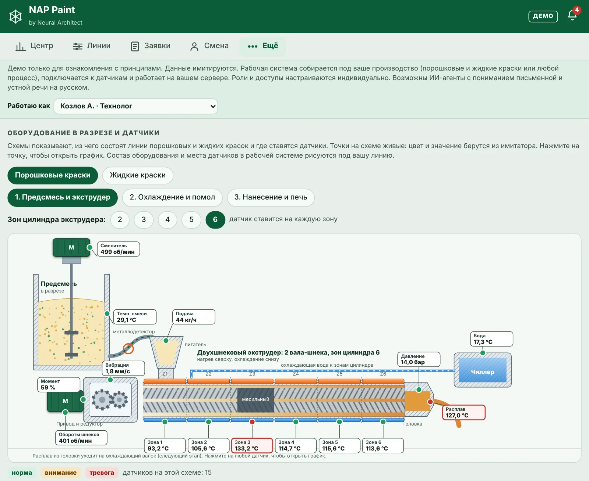
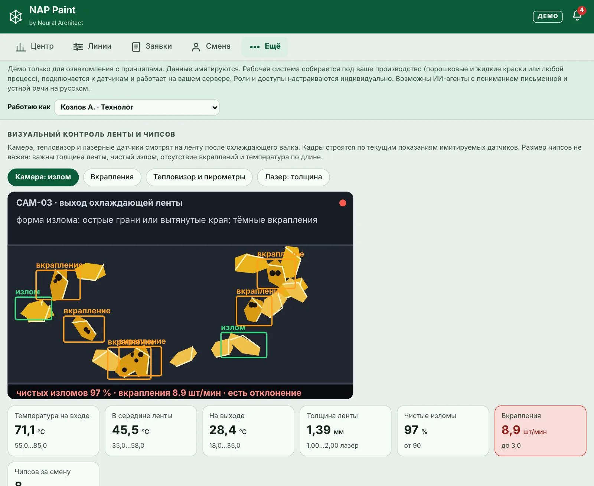
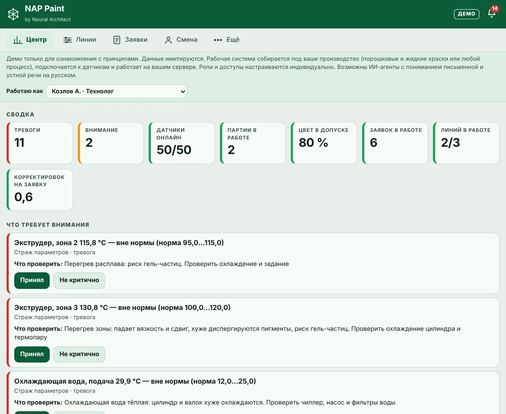

Система контроля, которая окупается сохранённым браком и простоем
Мы создадим программу под ваш проект и ваше оборудование: подключим датчики и камеры, настроим нормы и правила под ваши рецептуры. Она заранее показывает отклонение, объясняет причину и предлагает действие. Ниже: для чего это нужно, что для этого требуется, чем поможет и сколько вы сохраните.
Спросите программу: нажмите на вопрос
Выберите готовый вопрос. Помощник ответит с графикой, а цифры подставит из калькулятора ниже: меняйте данные вашего производства и задавайте вопрос заново.
Для чего это нужно и что для этого нужно
Брак порошка нельзя исправить после выпуска, а поломка начинается за часы и дни до остановки. Программа превращает показания оборудования в понятное предупреждение.
Меньше брака
Уход температуры зоны, давления, влажности камеры, режима печи ловится до того, как партия уйдёт в брак или на переделку.
Меньше внеплановых остановок
Вибрация и нагрев подшипников, износ шнеков, забитые фильтры видны заранее: остановка переносится в плановое окно.
Порядок и документы
Журнал отклонений, паспорта партий и история замеров готовы к проверке и разбору рекламаций.
Что для этого нужно
Датчики на оборудовании
Температуры зон, давление расплава, момент и ток, вибрация, температура подшипников, влажность камеры, печь. Часть уже стоит, остальное докупается точечно.
Камера над лентой
Промышленная камера в пыленепроницаемом корпусе с обдувом оптики: чипсы на ленте, вкрапления, задвижки и другие контрольные точки.
Шлюз и сервер в цеху
Шлюз собирает данные (OPC UA, Modbus и другие протоколы), локальный сервер хранит их и считает нейросети. Всё остаётся у вас, интернет не нужен.
Ваши нормы и история
Технологические карты, рецептуры, допуски, история отказов и брака. По ним настраиваются пороги и правила под ваше производство.
Люди с двух сторон
С вашей стороны технолог, механик и специалист по АСУ/ИТ для доступа. С нашей: разработка, настройка и обучение смен.
Пилот на одной линии
Начинаем с одной линии или участка, проверяем эффект на ваших данных и только потом масштабируем на остальные.
Как это выглядит в работе
Скриншоты демонстрационной версии: схема оборудования с датчиками, несколько ситуаций сразу, камера над лентой и ИИ-агент.




Сколько вы сохраните: калькулятор выгоды
Введите данные вашего производства. Калькулятор считает потери сейчас, эффект от системы и накопленную экономию по месяцам. Это расчёт по допущениям, а точный эффект подтверждается на пилоте.
Допущения по эффекту (доля потерь, которую удаётся сохранить) стартовые и зависят от оборудования, дисциплины смен и качества данных. Эффект нарастает за первые три месяца после запуска. Стоимость внедрения считается отдельно после обследования; введённая вами цифра нужна только для оценки срока окупаемости.
Почему это выгодно бизнесу
Потери на производстве красок складываются из мелочей, которые видны только после факта. Система переносит их обнаружение на раньше.
Без системы
- отклонение замечают по анализу или рекламации, партия уже выпущена
- поломка узнаётся остановкой линии, ремонт аварийный и дорогой
- причину ищут по бумажным журналам и памяти смены
- опыт технолога остаётся в голове и уходит вместе с ним
С системой
- прогноз и предупреждение до выхода за допуск
- остановка и ремонт в плановое окно, заказ запчастей заранее
- причина и доказательства (график, кадр камеры) под рукой
- правила и опыт закреплены в системе, смены работают по одной логике
Брак и переделка
Отклонение режима поймано до выпуска: меньше списаний и корректировок.
Простой
Каждый час линии стоит денег. Плановая остановка дешевле аварийной.
Ремонт и запчасти
Замена подшипника по состоянию дешевле, чем замена вместе с повреждённым узлом.
Рекламации
Паспорт партии и история режимов позволяют быстро разобраться и снять претензию.
Как подключим ваше оборудование
Программу создаём под ваш проект и ваше производство. Подключать датчики и оборудование можно тремя способами, выбирайте удобный.
Ваши инженеры
Ваши специалисты подключают датчики и приборы сами. Мы даём схему подключения, список точек, протоколы и принимаем данные в систему. Подходит, если у вас сильная служба АСУ.
Вместе с вашими инженерами
Мы подключаем программную часть и сложные точки, ваши инженеры дают доступ к оборудованию и выполняют монтаж. Быстрее, чем самим, и дешевле, чем всё под ключ.
Всё под ключ нашими инженерами
Наши инженеры подключают все датчики и оборудование и рассчитывают стоимость работ дополнительно, после обследования вашей линии.
С чего начинаем
- Знакомство и обследование
Разбираем ваши линии, приборы, потери и цели.
- Техническое задание
Состав датчиков, камер, правил, сроки и стоимость.
- Пилот на одной линии
Подключаем, настраиваем нормы, обучаем смену.
- Проверка эффекта
Сравниваем потери до и после на ваших данных.
- Масштабирование
Распространяем на остальные линии и участки.